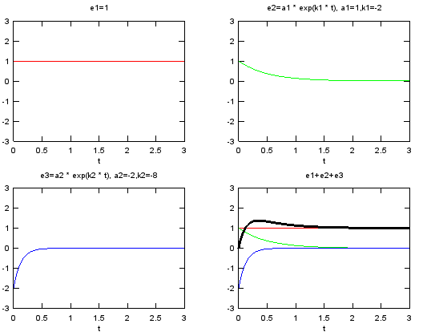

Exponential Form Home : www.sharetechnote.com
I think one of the most famous mathematical term in both science and engineering is 'exponential' which is represented as follows.
The purpose of this page is to give you some intuitive understanding of various exponential form and I recommend you to try to visualize any equations or formula which is made up of this component.
I will put various examples as much as possible in this page. You may use this page as a small dictionary for exponential function. Whenever you see any exponential function while you are reading literature, get back to this page and see how it look like.
- When k is a 'real' number. (e^(k t))
- When k is an 'imaginary' number and the real part of the complex number is '0' (e^(i k t))
- Combination of case 1 and Case 2. (e^(k t) e^(i k t))
- When the k is a complex number (e^((a + b i) t)
- Probablistic Distribution Function
- Solution of Differential Equation
- Sigmoid Curve (Population Model) : a/(a + e^(-a t))
- Forced Oscillation : e^(-k t)(-a cos(t) - b sin(t))
- Transfer Functions
This is easy to understand. When the k is a real number, you would have a plot with t as follows. (left plot is the case when k is positive value and the right plot is the one when k is negative value).
When k is an 'imaginary' number and the real part of the complex number is '0'.
This is the case where the equation is represented as e^(i t). As you see in the following plot, suprisinly this form can represent a cyclic (periodic) behaviour. (You would be able to find mathematical ground on how e^(i t) can represent the periodic behaviour.) This would be one of the most important and widely used form of exponential function. See Euler Form section in Complex Number pages to find how the exponential function can represent the cyclic behaviour.
Combination of case 1 and Case 2. (Multiplying Case 1 and Case 2).
If you simply multiplying the case 1 and case 2, you would be able to get the following result. As you see, now you can represent spiraling (cyclic + damping or cyclic + magnifying). Mathematical format of these are as follows.
Understanding this form is very important when you try to evaluate 'stability of a transfer function' in control system or filter design.
Following is the case when k is smaller than 0.
Following is the case when k is greater than 0.
When the k is a complex number.
This example represent the following format. This is basically the same form as the one we saw in previous case. It is just a little bit different mathematical presentation.
This case represent the form e^((a + b i) t) and depending on a, b you would have following different results. I think this is the most important form and you will see this form in almost every area of engineering. Fourier Transform, Differential Equation, Control System Design, Filter Design are only a portion of examples.
I strongly recommend you to have very concrete understanding of this form. Trying with various a, b values and see if how the result changes in the matlab code listed below can be a great help.
Following case is when a = -0.2 which is smaller than 0, b = 1.0; (Compare this with Case 3)
Following case is when a = 0.2 which is greater than 0, b = 1.0; (Compare this with Case 3)
Now let's change the b value. Following is the case when a = -0.2 and b = 2.0 which is greater than 1.
Can you identify the characteristics of variable a (real part of the complex number) and b(imaginary part of the complex number) ? Try with the following matlab code.
t=0:2*pi/40:4*pi;
k=1;
e1 = exp(k*t);
k = -1;
e2 = exp(k*t);
k=1;
e3 = exp(k*t*j);
k = -0.2;
e4 = exp(k*t).*exp(t*j);
k = 0.2;
e5 = exp(k*t).*exp(t*j);
a = -0.2;
b = 1.0;
e6 = exp((a+b*j)*t);
a = 0.2;
b = 1.0;
e7 = exp((a+b*j)*t);
a = -0.2;
b = 2.0;
e8 = exp((a+b*j)*t);
figure;
subplot(1,2,1);plot(t,e1);xlabel('t');ylabel('exp(kt), k=1.0');
subplot(1,2,2);plot(t,e2);xlabel('t');ylabel('exp(kt), k=-1.0');
figure;
subplot(2,2,2);plot(t,real(e3));axis([0 4*pi -1.1 1.1]);xlabel('t');ylabel('real - exp(jkt),k=1.0');
subplot(2,2,4);plot(t,imag(e3));axis([0 4*pi -1.1 1.1]);xlabel('t');ylabel('imaginary - exp(jkt),k=1.0');
subplot(2,2,[1 3]);plot(real(e3),imag(e3));axis([-1.1 1.1 -1.1 1.1]);xlabel('real - exp(jkt),k=1.0');ylabel('imaginary - exp(jkt),k=1.0');
figure;
subplot(2,2,2);plot(t,real(e4));axis([0 4*pi -1.1 1.1]);xlabel('t');ylabel('real - exp(k*t).*exp(t*j),k=-0.2');
subplot(2,2,4);plot(t,imag(e4));axis([0 4*pi -1.1 1.1]);xlabel('t');ylabel('imaginary - exp(k*t).*exp(t*j),k=-0.2');
subplot(2,2,[1 3]);plot(real(e4),imag(e4));axis([-1.1 1.1 -1.1 1.1]);xlabel('real - exp(k*t).*exp(t*j),k=-0.2');ylabel('imaginary - exp(k*t).*exp(t*j),k=-0.2');
figure;
subplot(2,2,2);plot(t,real(e5));axis([0 4*pi -15 15]);xlabel('t');ylabel('real - exp(k*t).*exp(t*j),k=0.2');
subplot(2,2,4);plot(t,imag(e5));axis([0 4*pi -15 15]);xlabel('t');ylabel('imaginary - exp(k*t).*exp(t*j),k=0.2');
subplot(2,2,[1 3]);plot(real(e5),imag(e5));axis([-15 15 -15 15]);xlabel('real - exp(k*t).*exp(t*j),k=0.2');ylabel('imaginary - exp(k*t).*exp(t*j),k=0.2');
figure;
subplot(2,2,2);plot(t,real(e6));axis([0 4*pi -1.1 1.1]);xlabel('t');ylabel('real - exp((a+b*j)*t),a=-0.2');
subplot(2,2,4);plot(t,imag(e6));axis([0 4*pi -1.1 1.1]);xlabel('t');ylabel('imaginary - exp((a+b*j)*t),a=-0.2');
subplot(2,2,[1 3]);plot(real(e6),imag(e6));axis([-1.1 1.1 -1.1 1.1]);xlabel('real - exp((a+b*j)*t),a=-0.2');ylabel('imaginary - exp((a+b*j)*t),a=-0.2');
figure;
subplot(2,2,2);plot(t,real(e7));axis([0 4*pi -15 15]);xlabel('t');ylabel('real - exp((a+b*j)*t),a=0.2');
subplot(2,2,4);plot(t,imag(e7));axis([0 4*pi -15 15]);xlabel('t');ylabel('imaginary - exp((a+b*j)*t),a=0.2');
subplot(2,2,[1 3]);plot(real(e7),imag(e7));axis([-15 15 -15 15]);xlabel('real - exp((a+b*j)*t),a=0.2');ylabel('imaginary - exp((a+b*j)*t),a=-0.2');
figure;
subplot(2,2,2);plot(t,real(e8));axis([0 4*pi -1.1 1.1]);xlabel('t');ylabel('real - exp((a+b*j)*t),a=-0.2,b=2.0');
subplot(2,2,4);plot(t,imag(e8));axis([0 4*pi -1.1 1.1]);xlabel('t');ylabel('imaginary - exp((a+b*j)*t),a=-0.2,b=2.0');
subplot(2,2,[1 3]);plot(real(e8),imag(e8));axis([-1.1 1.1 -1.1 1.1]);xlabel('real - exp((a+b*j)*t)');ylabel('imaginary - exp((a+b*j)*t)');
Another very popular application of exponential form is in Statistics and various kind of probablistic distribution is represented as a exponential form.
The most typical example is 'Normal Distribution' (Bell Shaped distribution) as follows.
x=-5:0.02:5;
m = 0;
s = 1;
e1 = 1/sqrt(2*pi*s^2)*exp(-(x-m).^2/(2*s^2));
m = 0;
s = 2;
e2 = 1/sqrt(2*pi*s^2)*exp(-(x-m).^2/(2*s^2));
m = -1;
s = 1;
e3 = 1/sqrt(2*pi*s^2)*exp(-(x-m).^2/(2*s^2));
subplot(2,2,1);plot(x,e1);axis([-5 5 0 0.5]);xlabel('x');ylabel('m=0, s=1');
subplot(2,2,2);plot(x,e2);axis([-5 5 0 0.5]);xlabel('x');ylabel('m=0, s=2');
subplot(2,2,3);plot(x,e3);axis([-5 5 0 0.5]);xlabel('x');ylabel('m=-1, s=0');
subplot(2,2,4);plot(x,e1,'r-',x,e2,'g-',x,e3,'b-');axis([-5 5 0 0.5]);xlabel('x');ylabel('m=0,0,-1, s=1,2,0');
Try to find what is the difference between this form and Normal distribution just by looking at the mathematical presentation. You will find the two major difference.
i) log(x) is used in stead of 'x' (horizontal axis become log scale and by definition of log, this function can be used only when x > 0
ii) 1/x (decreasing function) is multiplied with the exponential term.
x=0:0.02:5;
m = 0;
s = 1;
e1 = 1./(x.*s*sqrt(2*pi)).*exp(-(log(x)-m).^2/(2*s^2));
m = 0;
s = 0.5;
e2 = 1./(x.*s*sqrt(2*pi)).*exp(-(log(x)-m).^2/(2*s^2));
m = 0;
s = 0.25;
e3 = 1./(x.*s*sqrt(2*pi)).*exp(-(log(x)-m).^2/(2*s^2));
subplot(2,2,1);plot(x,e1,'r-');axis([0 5 0 2]);xlabel('x');ylabel('m=0, s=1');
subplot(2,2,2);plot(x,e2,'g-');axis([0 5 0 2]);xlabel('x');ylabel('m=0, s=0.5');
subplot(2,2,3);plot(x,e3,'b-');axis([0 5 0 2]);xlabel('x');ylabel('m=0, s=0.25');
subplot(2,2,4);plot(x,e1,'r-',x,e2,'g-',x,e3,'b-');axis([0 5 0 2]);xlabel('x');ylabel('m=0,0,0, s=1,0.5,0.25');
This form of distribution is very widely used for channel modeling in wireless communication. You will not be able to understanding anything about 'Fading' without understanding this function.
Try to find the difference between this form and Normal distribution and try to find the common part as well.
i) there is no 'm' (mean) term in the equation. (It means 'mean' is assumed to be '0')
ii) the exponential function part is exactly same as 'Normal Distribution with m = 0'
iii) x (increasing function) is multiplied to the exponential function.
x=0:0.02:5;
m = 0;
s = 1;
e1 = x./(s^2).*exp(-(x.^2)/(2*s^2));
m = 0;
s = 0.5;
e2 = x./(s^2).*exp(-(x.^2)/(2*s^2));
m = 0;
s = 0.25;
e3 = x./(s^2).*exp(-(x.^2)/(2*s^2));
subplot(2,2,1);plot(x,e1,'r-');axis([0 5 0 3]);xlabel('x');ylabel('m=0, s=1');
subplot(2,2,2);plot(x,e2,'g-');axis([0 5 0 3]);xlabel('x');ylabel('m=0, s=0.5');
subplot(2,2,3);plot(x,e3,'b-');axis([0 5 0 3]);xlabel('x');ylabel('m=0, s=0.25');
subplot(2,2,4);plot(x,e1,'r-',x,e2,'g-',x,e3,'b-');axis([0 5 0 3]);xlabel('x');ylabel('m=0,0,0, s=1,0.5,0.25');
Sigmoid : a/(a + e^(-a t))
This example represent the following form. This form is frequently used for the mathemtical modeling for population growth and chemical reaction etc.

t=-5:0.02:20;
a = 0.2;
e1 = a./(a.+exp(-a.*t));
a = 0.5;
e2 = a./(a.+exp(-a.*t));
a = 1.0;
e3 = a./(a.+exp(-a.*t));
subplot(2,2,1);plot(t,e1,'r-');axis([t(1) t(end) 0 1.2]);xlabel('t');ylabel('a=0.1');
subplot(2,2,2);plot(t,e2,'g-');axis([t(1) t(end) 0 1.2]);xlabel('t');ylabel('a=0.5');
subplot(2,2,3);plot(t,e3,'b-');axis([t(1) t(end) 0 1.2]);xlabel('t');ylabel('a=1.0');
subplot(2,2,4);plot(t,e1,'r-',t,e2,'g-',t,e3,'b-');axis([t(1) t(end) 0 1.2]);xlabel('t');ylabel('a=0.1, 0.5, 1.0');
Forced Oscillation : e^(-k t)(-a cos(t) - b sin(t))
A solution to a 2nd order differential equation in the form of y'' + a y'' + y = F(t) has this kind of graph. You will see this kind of format very often for mathematical modeling for spring-mass system.
t=0:0.02:20;
k = 0.2;
a = 1.0;
b = 0.2;
e1 = exp(-k.*t).*(-a.*cos(t)-b.*sin(t)) + 1;
k = 0.5;
a = 1.0;
b = 0.2;
e2 = exp(-k.*t).*(-a.*cos(t)-b.*sin(t)) + 1;
k = 1.0;
a = 1.0;
b = 0.2;
e3 = exp(-k.*t).*(-a.*cos(t)-b.*sin(t)) + 1;
subplot(2,2,1);plot(t,e1,'r-');axis([t(1) t(end) 0 2]);xlabel('t');ylabel('k=0.2 a=1.0 b=0.2');
subplot(2,2,2);plot(t,e2,'g-');axis([t(1) t(end) 0 2]);xlabel('t');ylabel('k=0.5 a=1.0 b=0.2');
subplot(2,2,3);plot(t,e3,'b-');axis([t(1) t(end) 0 2]);xlabel('t');ylabel('k=1.0 a=1.0 b=0.2');
subplot(2,2,4);plot(t,e1,'r-',t,e2,'g-',t,e3,'b-');axis([t(1) t(end) 0 2]);xlabel('t');ylabel('k=0.2, 0.5, 1.0');
Tranfer Function - Tracking without overshoot
This form is presentation for the simplest and most fundamental part of control system transfer function. (This is often called '1st order delay function'
t=0:0.02:20;
a = 0.1;
e1 = 1-exp(-a.*t);
a = 0.5;
e2 = 1-exp(-a.*t);
a = 1.0;
e3 = 1-exp(-a.*t);
subplot(2,2,1);plot(t,e1,'r-');axis([0 20 0 2]);xlabel('t');ylabel('a=0.1');
subplot(2,2,2);plot(t,e2,'g-');axis([0 20 0 2]);xlabel('t');ylabel('a=0.5');
subplot(2,2,3);plot(t,e3,'b-');axis([0 20 0 2]);xlabel('t');ylabel('a=1.0');
subplot(2,2,4);plot(t,e1,'r-',t,e2,'g-',t,e3,'b-');axis([0 20 0 2]);xlabel('t');ylabel('a=0.1, 0.5, 1.0');
Transfer Function - Tracking with overshoot/without oscillation
This example shows the following representation. The graph for this function is shown in thick black curve in the last graph, but it would not be easy to understand how the combination of a couple of exponential function can create such a graph. So I plotted the three component (1, a1 exp(k1 t), a2 exp(k2 t)) separately. This is also very important form of graph in Control System designa and analysis. (This form is often called '2nd order delay function').
Examine the sign of each values (a1, a2, k1, k2) in the following example. You would have totally different shape of curve depending on the sign of these values.

% 1 + a1 e^(k1 t) + a2 e^(k2 t)
t=0:0.02:3;
a1=1;
a2=-2;
k1=-2;
k2=-8;
e1 = 0 .* t .+ 1;
e2 = a1 .* exp(k1 .* t);
e3 = a2 .* exp(k2 .* t);
e4 = e1 + e2 + e3;
subplot(2,2,1);plot(t,e1,'r-');axis([0 3 -3 3]);xlabel('t');title('e1=1');
subplot(2,2,2);plot(t,e2,'g-');axis([0 3 -3 3]);xlabel('t');title('e2=a1 * exp(k1 * t), a1=1,k1=-2');
subplot(2,2,3);plot(t,e3,'b-');axis([0 3 -3 3]);xlabel('t');title('e3=a2 * exp(k2 * t), a2=-2,k2=-8');
subplot(2,2,4);plot(t,e1,'r-',t,e2,'g-',t,e3,'b-',t,e4,'k-','linewidth',3);axis([0 3 -3 3]);xlabel('t');title('e1+e2+e3');
Transfer Function - Tracking with overshoot/with oscillation
% 1 - e^(-k t) cos(f t)
t=linspace(0,2*pi,100);
k=0.5;
f=2;
e1 = 1 .- exp(-k .* t) .* cos(f.*t);
k=1.0;
f=2;
e2 = 1 .- exp(-k .* t) .* cos(f.*t);
k=1.5;
f=2;
e3 = 1 .- exp(-k .* t) .* cos(f.*t);
subplot(2,2,1);plot(t,e1,'r-');axis([t(1) t(end) 0 2]);xlabel('t');title('1 .- exp(-k .* t) .* cos(f.*t),k=0.5,f=2');
subplot(2,2,2);plot(t,e2,'g-');axis([t(1) t(end) 0 2]);xlabel('t');title('1 .- exp(-k .* t) .* cos(f.*t),k=1.0,f=2');
subplot(2,2,3);plot(t,e3,'b-');axis([t(1) t(end) 0 2]);xlabel('t');title('1 .- exp(-k .* t) .* cos(f.*t),k=1.5,f=2');
subplot(2,2,4);plot(t,e1,'r-',t,e2,'g-',t,e3,'b-');axis([t(1) t(end) 0 2]);xlabel('t');title('e1,e2,e3');